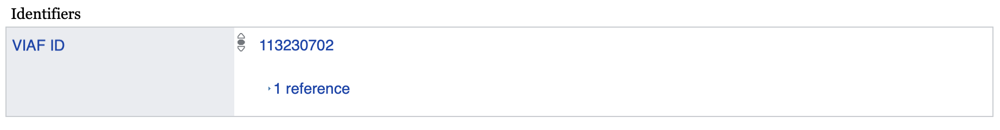

SELECT ?a ?b ?c
WHERE
{
x y ?a.
m n ?b.
?b f ?c.
}1 Wikidata and Other Open Knowledge Graphs
A knowledge graph represents a network of real-world entities—such as objects, events, situations or concepts—and illustrates the relationship among them.
Most companies and institutions work with a variety of information systems that are not well integrated. Information is located in different places, inside and outside the organisation, and it cannot be simply accessed as a whole. In the last decades, it has become clear that unifying these information sources into central databases or data lakes is rarely a good solution. Creating such centralised data stores is very costly and requires a lot of organisation. By the time centralisation is completed and finished, it often becomes apparent that both the knowledge requirements and the methodology for organising data have changed.
Here’s where knowledge graphs come in. They have the unique ability to automatically integrate and present a unified view of diverse and initially unrelated data sources. For instance, in an enterprise, they can power initiatives like Customer 360. Moreover, knowledge graphs are an ideal tool for implementing the Human-in-the-Loop (HITL) design principle in AI deployment. They offer a comprehensive view of the knowledge base that algorithms rely on, enhancing oversight and control.
1.1 Connect to Wikidata
Wikidata is a collaboratively edited multilingual knowledge graph hosted by the Wikimedia Foundation. It is a common source of open data that Wikimedia projects, such as Wikipedia, and anyone else, is able to use under the CC0 public domain license. As of early 2023, Wikidata had 1.54 billion item statements, or small, verifiable, scientific statements about our world.
Wikidata is a document-oriented database, focusing on items, which represent any kind of topic, concept, or object.

Knowledge graphs connect things in the real world, because their nodes - in Wikidata, the conceptual document -, represent people, objects, and their relationships as they are out there, and not as they are represented by an “ordinary” database . The Q42 document about the late English writer and humorist Douglas Adams connects facts about his life (birthday, place of birth, time of death), and connects him to his books, their translations, identifiers to look up these books, and so on.
Wikidata is a knowledge graph: it connects the concept of Douglas Adams (Q42), to the concept of his most quoted humorous episode from his world-famous Hitchhiker’s Guide to the Galaxy (Q25169) , which is a similarly structured document about the five books of his series, which document is further connected in the graph to the concept of the books’ Serbian translation (Q117279887).
Wikidata is not a database but a very useful system for filling up and keeping many databases in sync worldwide. If your own institutional or private library has a catalogue, you may have a copy of the Hitchhiker’s Guide to the Galaxy; in this case, your catalogue is likely to have a local, private identifier to your copy of the book. Imagine your little private catalogue, where you, like the editors of Wikidata, reserved the #42 entry to Douglas Adams’ book.
| ID | Author | Title |
|---|---|---|
| My-01 | Martell, Yann (Q13914) | Life of Pi (Q374204) |
| … | … | … |
| My-42 | Adams, Douglas (Q42) | Hitchhiker’s Guide to the Galaxy (Q25169) |
| … | … | … |
If you can connect your My-42 entry of Hitchhiker’s Guide to the Galaxy with the books’ Wikidata entry Q25169, you can import a wealth of information into your private catalogue. Furthermore, if you connect the Wikidata item Q42 of the author Douglas Adams to your catalogue’s own entry about the author, you can import a lot of additional knowledge, for example, information about his other works, or the end term of these books’ copyright protection, after which they will become public domain and they will be free to copy and distribute.
In Wikidata, each item has a unique, persistent identifier, a positive integer number, prefixed with the upper-case letter Q, known as a “QID”.Global information systems like to anchor authoritative information about people, books, musical works, and other important things to persistent identifiers. For example, in VIAF, the authority file that keeps information synchronised across national libraries, Douglas Adams’ persistent identifier is 113230702, whereas in the Portugese National Library it is 68537. Wikidata is particularly useful because it serves as an “identity broker”, and this linking information can be retrieved directly from Douglas Adams’ Q42 page.


1.1.1 Getting started with Wikidata
1.1.1.1 Global Identities
Mr and Mrs Barasits, a.k.a. János Barasits (1859-1935) and his wife, Barasits, Jánosné, born Pichler, Kornélia, were prominent postcard producers and publishers at the beginning of the 20th century. They produced plenty of beautiful postcards.
In the 1920s and 1930s, the authors’ right (~copyright) protection of photographs and postcards was relatively short, only 15 years, so their postcards went into the public domain in terms of copying long ago. Plenty of their beautiful works is out there on the internet, but it is very hard to put them into a collection, because most databases know next to nothing about the identities of these creators and their creations.
Unfortunately, you cannot find their name in the most commonly used authority controls, i.e., VIAF or ISNI. Writing to VIAF is only possible via member institutions, and ISNI costs money. A temporary solution is to create a Wikidata QID for János Barasits (Q124423018, until somebody registers his name into VIAF. Now, it will be easier to find further postcards from them, or other information about them all over the world!
Writing in Wikidata is free for all and subject to community review. If you read this tutorial, please pledge to record new persons (or other items) into Wikidata, only if your knowledge is solid. You can verify the information needed through proper research.
1.1.1.2 Create a Wikidata Item
In this tutorial, you can learn how to create a new item on Wikidata. Countless web and AI applications and millions of people use Wikidata, so in the beginning it is recommended to not experiment with it in the live system. Wikidata has a Sandbox for practising. We recommend using it as a first step. If you work with Wikibase, particularly with Reprex’s OpenCollections, you will have access to a similar sandbox. It will be prefilled with data, concepts, and properties suitable for your learning needs, often going beyond what you would find in the public Wikidata.
You can see how creating a new item looks like in the system:

The first step in creating an item (in this case an item for János Barasits) is providing the two most important information for an item, which is the “Label” and the “Description”. The “Label” is the name of the item (in our case the label of the item will be “János Barasits”). The “Description” contains a short explanation of our item (in our case the description for the item will be “Prominent Hungarian postcard producer and publisher).”Aliases” ara alternative names for the item.
After creating the item with the basic information of “Label” and “Description” we can weave this information entry into the knowledge graph. At this point, János Barasits could be a person, it could be a book titled after the person, or a photo of the person. Connecting János Barasits to other entities, such as the concept of a human being, will allow other people and their computer systems to understand that we are talking about a person here.

Add a few, basic statements to your new item, for example, that János Barasits is a human, he was male, born in 1859 (with the precision of a year only) and died in 1935.

The four characters, 1935 can be understood as a number for most readers, but such a data point without meaning is useless. When we add the “metadata”, and we connect 1935 to the definition of date of death, we add meaning (“semantics”) to the number 1935.
The definition of date of death is useful in a database, but in a knowledge base, we can do a lot more with this piece of information. With this information we can combine the fact that in Europe the copyright protection term of people’s creation runs up to 70 years after their death. Thus, a knowledge base can infere the fact that currently János Barasits’s postcards are out of copyright and they can be freely copied and distributed!
Here is a very basic Wikidata page for János Barasits. What is very important that we have a globally unique identifier, Q124423018 that uniquely identifies him as a human. If you have a collection of postcards (digitals or analogue, vintage physical objects), connecting your own database with Q124423018 will help you to import the knowledge of the expired copyright protection term; it will help you finding other out-of-copyright scanned copies of Barasits’ postcards; connect to other collections that hold items from them, and so on.
1.1.2 Retrieve an item from Wikidata
Many internal enterprise resource systems or APIs use SQL, a 50+ year-old data query language. SQL is the lingua franca of relational database systems; you may be familiar with it. Can you query Wikidata in SQL?
Not exactly. It requires a different querying language, which was developed for knowledge graphs. It is called SPARQL because it is similar to SQL, but they are rather distant cousins.
While SQL is widely used, it does have a significant limitation: your query scripts are specific to one database system or API. What works in your internal catalogue may not function in another organization’s. If you’ve written a script to update your data from a specific web API, it doesn’t guarantee that the script will be compatible with another API. Furthermore, it’s not future-proof: if the API owner (or your database manager) makes even a slight adjustment to the system, you may need to modify or rewrite your retrieval code.
Remember, the significant advantage of Wikidata and other open knowledge graphs is that millions of people work on improvements and extensions daily. This means that an SQL request would be outdated every day. Instead of SQL, SPARQL queries do not look for cells in data tables, but they use intelligent knowledge to find the cells containing data about what you need. In SQL, you need to know which table contains people’s birthdays and death dates to find out the year when János Barasits died. In SPARQL, you are looking for the cell that contains the date of death for the human known as János Barasits.
1.1.3 SPARQL basics
A simple SPARQL query looks like this:
Suppose we want to list all children of the baroque composer Johann Sebastian Bach. Using pseudo-elements like in the queries above, how would you write that query?
Hopefully you got something like this:
SELECT ?child
WHERE
{
# child "has parent" Bach
?child parent Bach.
# (note: everything after a ‘#’ is a comment and ignored by WDQS.)
}or this,
SELECT ?child
WHERE
{
# child "has father" Bach
?child father Bach.
}or this,
SELECT ?child
WHERE
{
# Bach "has child" child
Bach child ?child.
}The first two triples say that the ?child must have the parent/father Bach; the third says that Bach must have the child ?child. Let’s go with the second one for now.
So what remains to be done in order to turn this into a proper WDQS query? On Wikidata, items and properties are not identified by human-readable names like “father” (property) or “Bach” (item). (For good reason: “Johann Sebastian Bach” is also the name of a German painter, and “Bach” might also refer to the surname, the French commune, the Mercury crater, etc.) Instead, Wikidata items and properties are assigned an identifier. To find the identifier for an item, we search for the item and copy the Q-number of the result that sounds like it’s the item we’re looking for (based on the description, for example). To find the identifier for a property, we do the same, but search for “P:search term” instead of just “search term”, which limits the search to properties. This tells us that the famous composer Johann Sebastian Bach is Q1339, and the property to designate an item’s father is P:P22.
And last but not least, we need to include prefixes. For simple WDQS triples, items should be prefixed with wd:, and properties with wdt:. (But this only applies to fixed values – variables don’t get a prefix!)
Putting this together, we arrive at our first proper WDQS query:
SELECT ?child
WHERE
{
# ?child father Bach
?child wdt:P22 wd:Q1339.
}Try the first query:

The first querry will provide you with identifiers, which is great if you are a programmer and you are wiring your database to Wikidata, but less impressive if you are getting familiar with SPARQL and you want to see clearly the fruits of your work.
Luckily, Wikidata has a human-friendly extension to SPARQL. If you add the following command to your query: SERVICE wikibase:label { bd:serviceParam wikibase:language "[AUTO_LANGUAGE]".somewhere within the WHERE clause, you get additional variables: For every variable ?foo in your query, you now also have a variable ?fooLabel, which contains the label of the item behind ?foo.
If you add this to the SELECT clause, you get the item as well as its label:
SELECT ?child ?childLabel
WHERE
{
# ?child father Bach
?child wdt:P22 wd:Q1339.
SERVICE wikibase:label { bd:serviceParam wikibase:language "[AUTO_LANGUAGE]". }
}
Try running that query – you should see not only the item numbers, but also the names of the various children.
| child | childLabel |
|---|---|
| wd:Q57225 | Johann Christoph Friedrich Bach |
| wd:Q76428 | Carl Philipp Emanuel Bach |
| … |